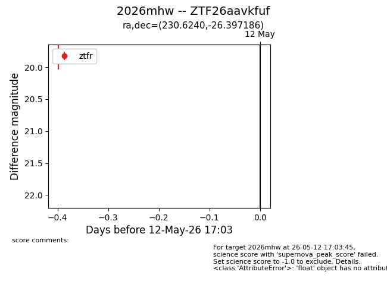
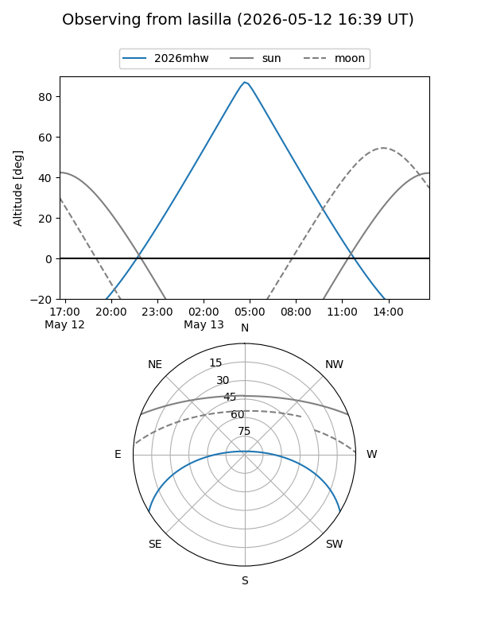
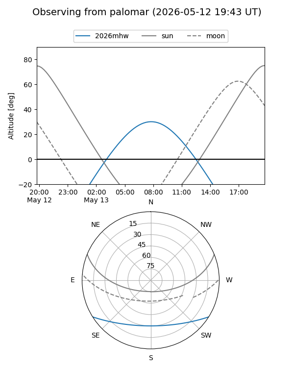
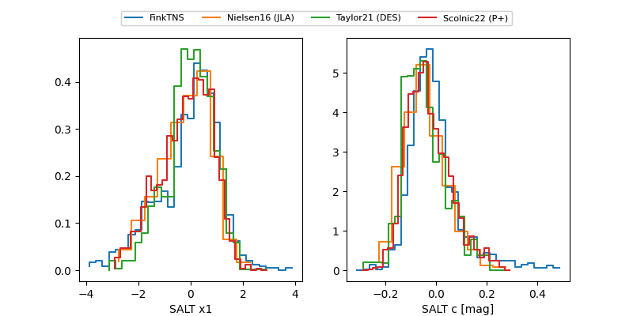

2026mhw
Target 2026mhw at 2026-05-12 17:05
Aliases and brokers:
FINK: link
Lasair: link
ALeRCE: link
TNS: link
YSE: link
alt names
ZTF26aavkfuf (ztf,fink_ztf)
2026mhw (tns,yse)
Coordinates:
equatorial (ra, dec) = 230.6240,-26.39719
equatorial (HMS+DMS) = 15:22:29.76,-26:23:49.87
galactic (l, b) = (340.2905,+25.30784)
Flags:
Photometry:
last ztfr=19.85
1 ztfr detections
Lightcurve

Visibility


Additional plots
